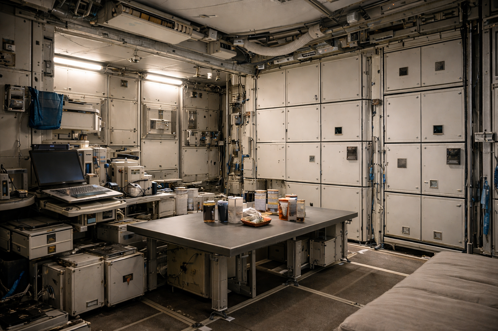
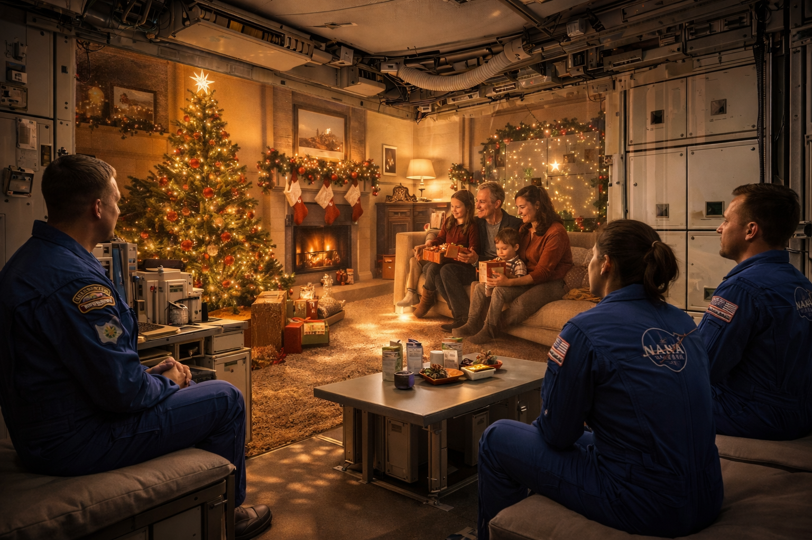
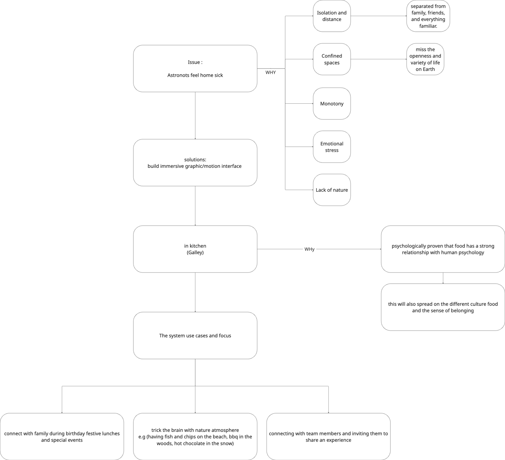
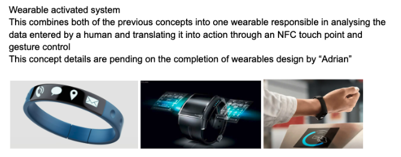
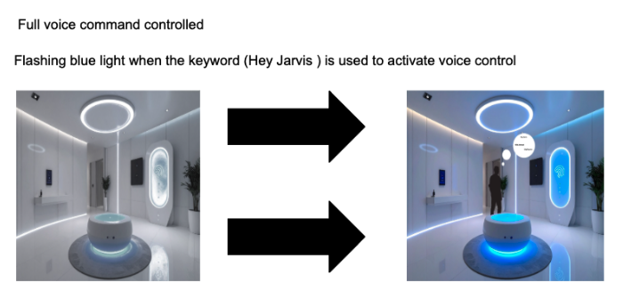
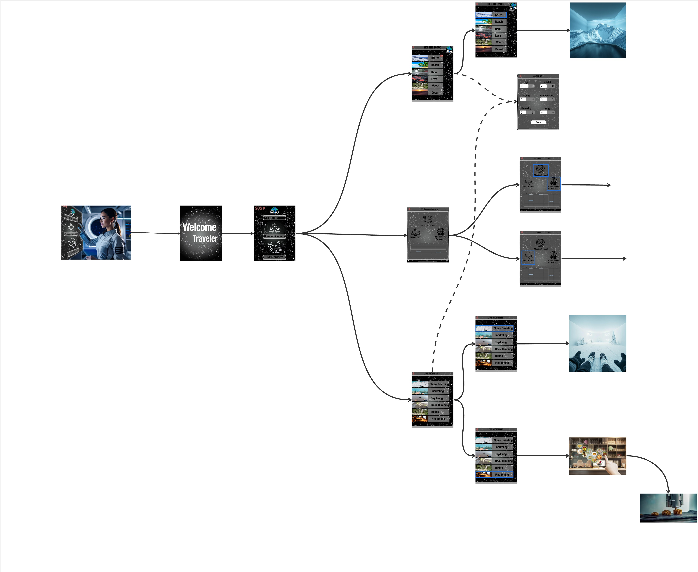

Earthlight — Astronaut Wellbeing System
A human-centred environmental system designed to improve astronaut health and wellbeing during long-duration space missions — supporting emotional stability, motivation, and psychological connection.


Earthlight
A personalised system designed to support astronaut wellbeing through Earth-like sensory experiences, adaptive environments, and intuitive control.
Overview
Earthlight explores how environmental design can support astronaut health during long-duration missions. Rather than treating wellbeing as a “nice-to-have,” the system frames emotional stability and psychological connection as core requirements for sustainable habitation in space.
Design Brief
Group Brief
Our space design brief developed and innovated upon existing information and concepts to improve astronauts’ wellbeing during long-distance missions aboard the International Space Station (ISS). We focused on improving the crew's 24-hour habitation cycle individually and collectively.
As a team, we aimed to improve the crew's interaction aboard the mind, particularly on long missions. Our investigation focused on three domains: habitat design, psychological and physical well-being, and nutrition practices. Ultimately, we aimed to optimise the performance of the environment on the ISS, prioritising the needs of the astronauts.
Introduction
The team’s scenario aims to enhance living and working conditions aboard the International Space Station. It focuses on improving crew interaction and wellbeing—particularly for longer expeditions into deep space—by investigating habitat design, psychological & physical wellbeing, and nutrition practices.
Historically, the ISS has been viewed as a complex and chaotic environment, highlighting challenges of living and working in microgravity. As a group, we predicted this can contribute to astronauts feeling cramped and overwhelmed, potentially impacting wellbeing, productivity, and mission performance.
My focus
At this stage, my primary focus was how to personalise astronauts’ daily experience so they feel motivated and engaged during meals. With taste perception reduced in microgravity, making food “taste better” alone wouldn’t create the impact we needed.
This raised a key question: How can someone experience the enjoyment of good food if they can’t taste it?
I remembered testing Apple Vision Pro and how immersive systems can influence perception—tricking the brain into feeling presence and sensory realism. This led me to explore how similar techniques might help astronauts feel more connected, supported, and grounded—even when the physical senses are limited.
As I dug deeper, astronaut feedback highlighted that the opportunity extends beyond food: it can address homesickness, emotional fatigue, and daily monotony—especially during long-duration missions.
Mind Map

Detailed research board and full system mapping available via interactive Miro board . Password: 12345678
Concept Exploration
Early exploration focused on how astronauts interact with their environment and how personalisation could improve wellbeing. Journey mapping and system breakdowns helped clarify where the system could support daily routines, emotional stability, and connection.


Control Systems Concepts
I explored multiple control approaches to ensure intuitive use in microgravity and across different contexts. The goal was low effort, minimal friction, and strong personal ownership.
- Hologram interface
- Voice command
- Motion recognition command
- Wearable personalisation (used as a “key” to load preferences)

Final Design — Earthlight


Earthlight combines immersive visuals, ambient sound integration, and adaptive environmental control to support emotional wellbeing during long-duration missions. The system is designed to integrate into existing spacecraft architecture and remain operationally compatible.
Concept Development
Detailed documentation including research mapping, system logic, safety validation, interface scenarios, and implementation studies.
Full Project Documentation (PDF)
Complete research, human factors verification, safety standards, and integrated system proposal.
View PDF →Presentation Slides (PPT)
Condensed visual presentation of the concept, system strategy, and final proposal.
View Slides →Outcome
Earthlight reframes wellbeing as a design requirement for space habitation. By supporting emotional stability, connection, and daily motivation, the concept contributes to healthier crews and more sustainable long-duration missions.